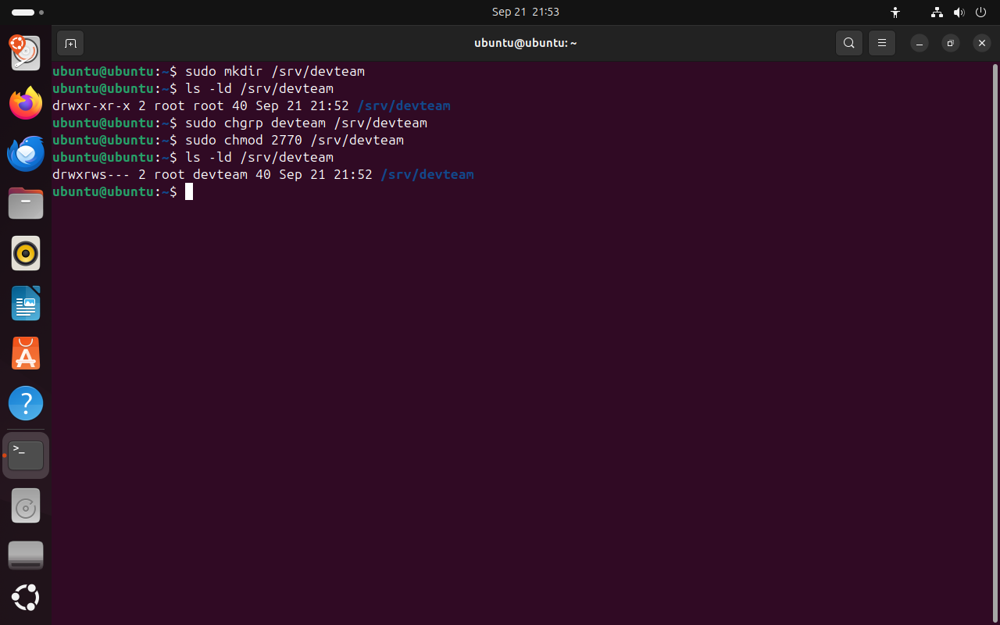
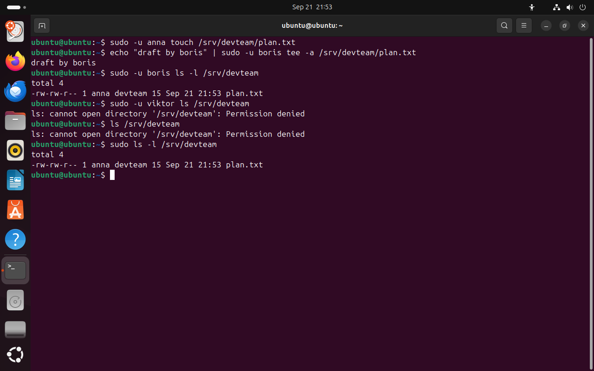
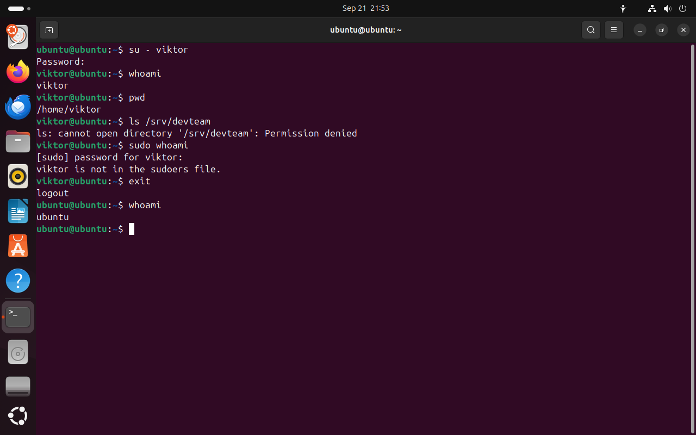
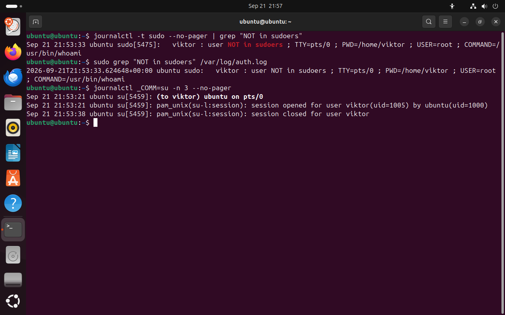
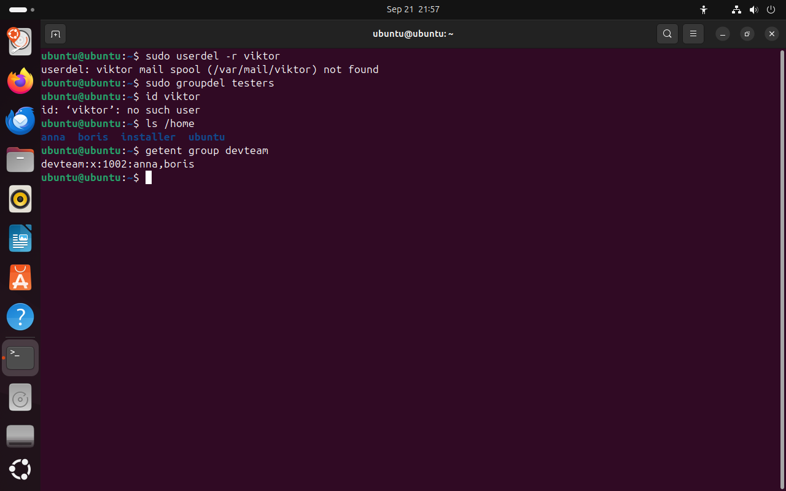

Часть 6 из 7
Общий каталог команды
В этой части создадим каталог /srv/devteam, в котором anna и boris работают вместе, проверим доступ от имени каждого участника, войдём под учётной записью viktor и найдём следы этих действий в журнале.
6.1 Каталог с группой-владельцем
По стандарту FHS, который мы разбирали на занятии 3, в /srv лежат данные, которые система предоставляет другим: сайты, файловые хранилища, общие каталоги. Создадим там каталог /srv/devteam. После mkdir через sudo владельцем и группой каталога будет root, а остальные пользователи смогут только читать его содержимое.
Команда chgrp (change group) меняет группу файла или каталога. После sudo chgrp devteam /srv/devteam вторая тройка прав будет действовать для участников devteam. Команда chmod (change mode) меняет сами права. Запись 2770 читается по цифрам.
| Цифра | Значение | Для /srv/devteam |
|---|---|---|
2 | бит setgid: новые файлы получают группу каталога | файлы anna и boris сразу принадлежат devteam |
7 | права владельца: r (4) + w (2) + x (1) | root: rwx |
7 | права группы | devteam: rwx, с битом setgid — rws |
0 | права остальных | все остальные: --- |
Каждая цифра прав — сумма: чтение 4, запись 2, выполнение 1. Семь — все три права, пять — чтение и выполнение, ноль — ничего. Бит setgid нужен в общем каталоге потому, что без него файл получает основную группу создателя: файл anna принадлежал бы группе anna, и boris не смог бы его изменить.
sudo mkdir /srv/devteamчто делает
Что делает команда. Создаёт каталог /srv/devteam; владелец — root.
По частям:
sudo- выполнить команду от имени другого пользователя, по умолчанию root
mkdir- создать каталог
/srv/devteam- какой каталог создать (абсолютный путь)
ls -ld /srv/devteam# права после созданиячто делает
Что делает команда. Выводит права, владельца и группу самого каталога /srv/devteam.
По частям:
ls- вывести содержимое каталога
-l- подробный список: права, владелец, группа, размер
-d- показать сам каталог, а не его содержимое
/srv/devteam- что показать (абсолютный путь)
sudo chgrp devteam /srv/devteam# группа каталога — devteamчто делает
Что делает команда. Меняет группу каталога /srv/devteam на devteam.
По частям:
sudo- выполнить команду от имени другого пользователя, по умолчанию root
chgrp- сменить группу файла или каталога
devteam- новая группа devteam
/srv/devteam- какой каталог (абсолютный путь)
sudo chmod 2770 /srv/devteam# setgid, rwx владельцу и группе, остальным ничегочто делает
Что делает команда. Устанавливает права: setgid, все права владельцу и группе, никаких прав остальным.
По частям:
sudo- выполнить команду от имени другого пользователя, по умолчанию root
chmod- изменить права доступа
2770- права числом: 2 — setgid, 7 — rwx владельцу, 7 — rwx группе, 0 — ничего остальным
/srv/devteam- какой каталог (абсолютный путь)
ls -ld /srv/devteamчто делает
Что делает команда. Выводит права, владельца и группу самого каталога /srv/devteam.
По частям:
ls- вывести содержимое каталога
-l- подробный список: права, владелец, группа, размер
-d- показать сам каталог, а не его содержимое
/srv/devteam- что показать (абсолютный путь)
- 1после mkdir: остальные могут читать каталог
- 2группа root
- 3владелец root: rwx
- 4группа: rws — все права и наследование группы
- 5остальные: --- доступа нет
- 6группа каталога — devteam
{kind=link}

Весь снимок ↗Каталог /srv/devteam до и после chgrp и chmod.
Что показывает снимок. После chgrp и chmod каталог принадлежит группе devteam: владелец и группа имеют все права, остальные — никаких, бит s передаёт группу новым файлам.
Где это пригодится. Так настраивают общий каталог проекта на сервере: доступ получают участники группы, а новый участник получает его через usermod -aG.
6.2 Проверка доступа от имени участников
Проверять доступ удобно, не выходя из своего сеанса. Команда sudo -u имя команда выполняет команду от имени указанного пользователя с его группами. Так администратор видит результат, который получит каждый участник команды.
Команда tee -a файл дописывает полученный текст в конец файла. Запись echo … | sudo -u boris tee -a … нужна потому, что перенаправление >> выполняет оболочка текущего пользователя, а tee работает от имени boris и проверяет права boris.
sudo -u anna touch /srv/devteam/plan.txt# anna создаёт файлчто делает
Что делает команда. От имени anna создаёт пустой файл plan.txt в общем каталоге.
По частям:
sudo- выполнить команду от имени другого пользователя, по умолчанию root
-u anna- выполнить от имени пользователя anna
touch- создать пустой файл
/srv/devteam/plan.txt- какой файл (абсолютный путь)
echo "draft by boris" | sudo -u boris tee -a /srv/devteam/plan.txt# boris дописывает в файл annaчто делает
Что делает команда. От имени boris дописывает строку в конец файла plan.txt.
По частям:
echo- напечатать текст
"draft by boris"- текст строки
|- передать вывод левой команды на вход следующей
sudo- выполнить команду от имени другого пользователя, по умолчанию root
-u boris- выполнить от имени пользователя boris
tee- записать полученный текст в файл и вывести на экран
-a- дописать в конец файла; без -a файл перезаписывается
/srv/devteam/plan.txt- в какой файл записать (абсолютный путь)
sudo -u boris ls -l /srv/devteamчто делает
Что делает команда. От имени boris выводит содержимое общего каталога с владельцами файлов.
По частям:
sudo- выполнить команду от имени другого пользователя, по умолчанию root
-u boris- выполнить от имени пользователя boris
ls- вывести содержимое каталога
-l- подробный список: права, владелец, группа, размер
/srv/devteam- что показать (абсолютный путь)
sudo -u viktor ls /srv/devteam# viktor не в devteamчто делает
Что делает команда. От имени viktor пытается вывести содержимое общего каталога.
По частям:
sudo- выполнить команду от имени другого пользователя, по умолчанию root
-u viktor- выполнить от имени пользователя viktor
ls- вывести содержимое каталога
/srv/devteam- что показать (абсолютный путь)
ls /srv/devteam# ubuntu тоже не в devteamчто делает
Что делает команда. От имени текущего пользователя пытается вывести содержимое общего каталога.
По частям:
ls- вывести содержимое каталога
/srv/devteam- что показать (абсолютный путь)
sudo ls -l /srv/devteam# rootчто делает
Что делает команда. С правами root выводит содержимое общего каталога.
По частям:
sudo- выполнить команду от имени другого пользователя, по умолчанию root
ls- вывести содержимое каталога
-l- подробный список: права, владелец, группа, размер
/srv/devteam- что показать (абсолютный путь)
- 1команда выполнена от имени anna
- 2boris дописал строку в файл anna
- 3владелец anna, группа devteam унаследована от каталога
- 415 байт: строка boris записана
- 5viktor не состоит в devteam — доступ закрыт
- 6ubuntu тоже нет в devteam: группа sudo прав на каталог не даёт
{kind=link}

Весь снимок ↗Участники devteam работают с общим файлом, остальным каталог закрыт.
Что показывает снимок. anna создала файл, boris дописал в него строку; viktor и ubuntu получили отказ; root видит содержимое каталога.
Где это пригодится. Проверку sudo -u выполняют после каждой настройки прав: результат видно сразу, не нужно входить под каждым пользователем.
Вторая ошибка на снимке получена от имени пользователя ubuntu. Он администратор, он состоит в группе sudo, но без команды sudo работает с правами обычного пользователя, и каталог для него закрыт. Членство в группе sudo даёт право выполнять команды от имени root, а права на файлы проверяются для каждого процесса отдельно.
На схеме ниже можно выбрать пользователя и действие и пройти ту же проверку, которую выполняет ядро: сравнение UID с владельцем, поиск группы каталога среди групп процесса и выбор тройки прав.
drwxrws--- владелец root группа devteam /srv/devteam6.3 Вход под другим пользователем: su
Команда su - имя (switch user) открывает оболочку другого пользователя. Она спрашивает пароль того пользователя, в которого вы переключаетесь. Дефис означает полный вход: переменные окружения и текущий каталог становятся такими, как при обычном входе, — открывается домашний каталог пользователя.
Сравните две команды. su требует пароль целевого пользователя, поэтому пароль root пришлось бы сообщить всем администраторам. sudo требует пароль того, кто его вызвал, проверяет правила и записывает каждую команду в журнал. Поэтому в Ubuntu для административных задач используют sudo.
su - viktor# войти как viktorчто делает
Что делает команда. Открывает оболочку viktor с полным входом; спрашивает пароль viktor.
По частям:
su- открыть оболочку другого пользователя
-- полный вход: окружение и домашний каталог целевого пользователя
viktor- в чью учётную запись войти
Lab-2026-pass# пароль viktorwhoami# внутри сеанса viktorpwdls /srv/devteamsudo whoami# попытка получить права rootLab-2026-pass# пароль viktor для sudoexit# вернуться в сеанс ubuntuwhoamiчто делает
Что делает команда. Выводит имя пользователя, от имени которого работает оболочка.
По частям:
whoami- вывести имя текущего пользователя
- 1su запрашивает пароль viktor
- 2приглашение с именем viktor
- 3su - открыл домашний каталог viktor
- 4доступа к каталогу команды нет
- 5sudo спрашивает пароль вызвавшего — viktor
- 6viktor нет в правилах sudoers — команда не выполнена
{kind=link}

Весь снимок ↗Сеанс viktor: нет доступа к каталогу команды и нет права на sudo.
Что показывает снимок. В сеансе viktor каталог команды закрыт, а sudo отказывает: viktor нет в правилах.
Где это пригодится. Вход под учётной записью пользователя через su - помогает воспроизвести жалобу «у меня нет доступа» в тех же условиях, что у пользователя.
6.4 Следы в журнале
Отказ sudo тоже записывается в журнал — со словами NOT in sudoers, именем пользователя и командой, которую он пытался выполнить. Администратор регулярно просматривает такие записи: они показывают попытки получить права, которых у пользователя нет. Ключ -t sudo отбирает записи по метке программы; та же запись есть в текстовом журнале /var/log/auth.log. Вход через su журнал записывает от имени программы su.
journalctl -t sudo --no-pager | grep "NOT in sudoers"# отказ sudoчто делает
Что делает команда. Выводит записи sudo об отказах: пользователя нет в правилах.
По частям:
journalctl- прочитать системный журнал
-t sudo- только записи с меткой sudo
--no-pager- вывести сразу в терминал, без постраничного просмотра
|- передать вывод левой команды на вход следующей
grep- отобрать строки, в которых есть образец
"NOT in sudoers"- образец: слова записи об отказе sudo
sudo grep "NOT in sudoers" /var/log/auth.log# та же запись в файлечто делает
Что делает команда. Ищет те же записи об отказах в текстовом журнале входов.
По частям:
sudo- выполнить команду от имени другого пользователя, по умолчанию root
grep- отобрать строки, в которых есть образец
"NOT in sudoers"- образец: слова записи об отказе sudo
/var/log/auth.log- в каком файле искать (абсолютный путь)
journalctl _COMM=su -n 3 --no-pager# вход через suчто делает
Что делает команда. Выводит три последние записи журнала от программы su.
По частям:
journalctl- прочитать системный журнал
_COMM=su- только записи программы su
-n 3- вывести последние 3 записей
--no-pager- вывести сразу в терминал, без постраничного просмотра
- 1кто пытался выполнить sudo
- 2отказ: пользователя нет в правилах
- 3от чьего имени он хотел выполнить команду
- 4какую команду
- 5та же запись в /var/log/auth.log
- 6su: ubuntu вошёл как viktor
{kind=link}

Весь снимок ↗Попытка viktor выполнить sudo и вход через su в журнале.
Что показывает снимок. В журнале и в /var/log/auth.log записана попытка viktor выполнить whoami от имени root; отдельно записан вход ubuntu в сеанс viktor через su.
Где это пригодится. Записи NOT in sudoers — повод выяснить, кто и зачем пытался получить права администратора.
6.5 Удаление учётной записи
Когда сотрудник уходит из команды, его учётную запись удаляют. Команда userdel -r имя удаляет строки из /etc/passwd, /etc/shadow и /etc/group, а ключ -r — ещё и домашний каталог с почтовым ящиком. Группу, которая больше не нужна, удаляет groupdel.
Файлы пользователя за пределами домашнего каталога userdel не трогает. Они остаются с числовым UID удалённой записи, и если позже создать нового пользователя с тем же номером, он станет их владельцем. Поэтому перед удалением записи файлы пользователя находят командой find / -user имя и передают другому владельцу.
sudo userdel -r viktor# запись и домашний каталогчто делает
Что делает команда. Удаляет учётную запись viktor вместе с домашним каталогом.
По частям:
sudo- выполнить команду от имени другого пользователя, по умолчанию root
userdel- удалить учётную запись
-r- удалить и домашний каталог с почтовым ящиком
viktor- какую запись удалить
sudo groupdel testers# группа больше не нужначто делает
Что делает команда. Удаляет группу testers.
По частям:
sudo- выполнить команду от имени другого пользователя, по умолчанию root
groupdel- удалить группу
testers- какую группу удалить
id viktor# проверкачто делает
Что делает команда. Выводит номера и группы viktor или сообщает, что такой записи нет.
По частям:
id- вывести номера пользователя и его группы
viktor- чей номер показать
ls /homeчто делает
Что делает команда. Выводит имена домашних каталогов.
По частям:
ls- вывести содержимое каталога
/home- что показать (абсолютный путь)
getent group devteam# группа команды не измениласьчто делает
Что делает команда. Выводит строку группы devteam вместе со списком участников.
По частям:
getent- получить запись из системной базы данных
group- база групп
devteam- какая запись
- 1почтового ящика у viktor не было, каталог /home/viktor удалён
- 2учётной записи больше нет
- 3в /home нет каталога viktor
{kind=link}

Весь снимок ↗userdel -r удалил учётную запись viktor вместе с домашним каталогом.
Что показывает снимок. Учётная запись viktor и её домашний каталог удалены, группа testers удалена, состав devteam не изменился.
Где это пригодится. Учётные записи уволившихся сотрудников удаляют или блокируют сразу: неиспользуемая запись с паролем остаётся способом войти в систему.
Итоги части 6
chgrpменяет группу каталога,chmod 2770открывает его владельцу и группе и закрывает для остальных.- Бит setgid на каталоге передаёт его группу новым файлам.
sudo -u имя командапроверяет доступ от имени другого пользователя.- Членство в группе sudo не даёт прав на файлы: права проверяются для каждого процесса.
su - имятребует пароль целевого пользователя; отказы sudo и входы su записываются в журнал.userdel -rудаляет запись и домашний каталог; файлы в других каталогах остаются.
В отчётСнимок ls -ld /srv/devteam и снимок проверки доступа трёх пользователей.